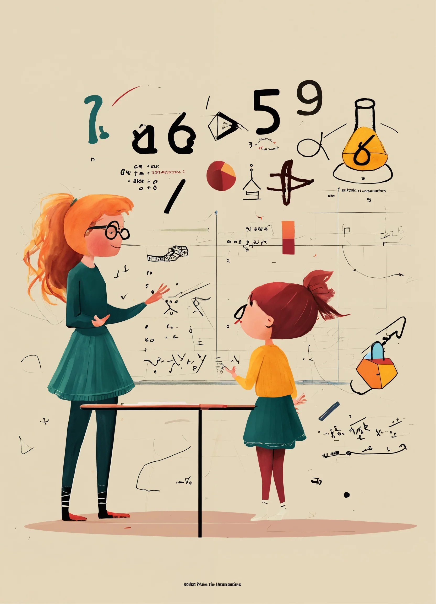

Wat is er te vinden?


In deze les wordt het begrip van verhoudingen duidelijk gemaakt met behulp van vouwconstructies.
Voor de leraar: Een handleiding om een les van ongeveer 50 minuten te geven. Deze les is geschikt voor de derde of vierde klas van HAVO en VWO.
Stel er is een winkel waar kralenkettingen worden verkocht die bestaan uit de kleuren: rood, blauw en geel. Hoeveel verschillende kettingen kan deze winkel verkopen, er vanuitgaande dat we oneindig veel kralen van elke kleur hebben? Met Burnside's lemma kun je dit soort vragen beantwoorden.
In deze animatie bedoeld voor een breed publiek geven we een introductie in de groepentheorie en Burnside's lemma.
Gebruik: Voel vrij om deze animatie te gebruiken in de klas of tijdens een activiteit om iets leuks te laten zien uit de moderne wiskunde!
Als wiskundigen berusten we vaak op ons vermogen om concepten te visualiseren. Wanneer dit inbeeldingsvermogen mist, zal een wiskundige andere vaardigheden moeten benutten. Dit zou men niet moeten beperken als wiskundigen. Toch blijkt dat de generatie slechtziende leerlingen tegenwoordig beperkt wordt in hun wiskundeonderwijs, zeker op gebieden waar ruimtelijk inzicht ter sprake komt.
Voor de leraar: Een lesplan en een opgavenplan om een les over driedimensionale meerkunde te geven.
Voor de leraar: Een docentenhandleiding en drie werkbladen met uitwerkingen. Elk werkblad vult een les van ongeveer 45 minuten.
Het huidige examenprogramma voor havo wiskunde A bevat een onderdeel ICT. Aan het eind van de opleiding wordt er verwacht dat de leerlingen statistische vraagstukken kunnen beantwoorden over grote datasets. Hiervoor moeten de leerlingen leren omgaan met datasets op een computer. Toch bestaat er geen standaardprogramma hierover. We hebben een nieuwe module gemaakt, waarin de behandelde theorie voor de statistiek en ICT beter op elkaar aansluiten.
Voor de leraar: Een syllabus met extra theorie en verduidelijkheden, en nog een boekje over ICT vaardigheden.
Dit project is tot stand gekomen als een samenwerking met Prof. dr. Marjan Sjerps van het NFI en de UvA. Marjan Sjerps rapporteert met een team van het NFI over verricht forensisch onderzoek. In deze rapporten vermelden zij onder andere de bewijskracht van bewijsstukken. De bewijskracht van deze bewijsstukken is van groot belang tijdens grote ingewikkelde rechtszaken, waar veel partijen in zijn betrokken.
Gebruik: Voel vrij om alle materiaal te gebruiken in de klas, tijdens een project of een activiteit om iets leuks te laten zien uit de moderne wiskunde! Dit onderwerp kan gebruikt worden in het kader van een vak over kansrekening of statistiek om te illustreren hoe belangrijk het is om scherp te kijken naar wat statistische resultaten eigenlijk betekennen.
Op de middelbare school worden allerlei vaardigheden opgebouwd en wordt er kennis bijgebracht. Er is voorlopig een vaardigheid die ontbreekt: het programmeren. In de laatste 20 jaar is programmeren een stuk toegankelijker geworden en daarmee ook vaker gebruikt om problemen op te lossen. In een groot deel van de vervolgopleidingen wordt programmeren voor van alles gebruikt, zoals bij data-analyse of modeleren.
Voor het project Plezier met Python was de opdracht een Python cursus te maken voor leerlingen van het Stedelijk Gymnasium Leiden van VWO 3 t/m 5.
Voor de leraar: Een programmeercursus bestaande uit 9 lessen, om de basis van programmeren over te brengen aan de hand van leuke wiskundige opdrachten.
IMAGINARY is een rondreizende wiskunde tentoonstelling door heel Nederland en België, georganiseerd door universiteiten en partnerorganisaties. Het idee van IMAGINARY is om de pracht en praal van de wiskunde te laten zien aan een breed publiek, en zo was het ook de bedoeling dat onze activiteit dit reflecteert. De opening van IMAGINARY in Amsterdam was op 12 mei 2023. Op 12 mei word de Internationale Dag van Vrouwen in de Wiskunde gevierd, en dus hebben de studenten een presentatie over het werk van Maryna Viazovska ontwikkeld.
Gebruik: Voel vrij om de slides te gebruiken tijdens een activiteit of lezing over het wek van Maryna Viazovska.
Deze lessen hebben wij zelf voorbereid en gegeven aan twee vwo klassen wiskunde. Voor dit project zijn we tweemaal naar het Coornhert Lyceum in Haarlem gegaan om examentraining te geven over combinatoriek aan leerlingen die in hun laatste jaar vwo zitten. Deze leerlingen maken dit jaar hun centraal eindexamens en het onderwerp combinatoriek is daar onderdeel van. In de afgelopen 10 jaar bestond 6,5% van de vragen uit combinatoriek, zie Explicaro. De leerlingen hebben dit onderwerp voor het laatst behandeld in de vierde klas en de nodige herhaling en uitleg was dus zeer welkom.
Voor de leraar: Materiaal voor examentraining over combinatoriek aan leerlingen die in hun laatste jaar vwo zitten.
We hebben twee lesboekjes gemaakt voor leerlingen van bovenbouw wiskunde D. Het eerste boekje behandelt de formule van Euler voor veelvlakken en het tweede boekje draait om ons hoofdonderwerp: de stelling van Descartes. Voor de doelgroep hebben we specifiek gekozen voor leerlingen die wiskunde D volgen. De stelling van Descartes past wel goed bij wiskunde D, omdat we de leerling ook de stelling van Descartes wilden laten bewijzen. Het reguliere programma van wiskunde D bevat namelijk relatief veel bewijzen. Bovendien kiezen wiskunde D leerlingen vaak voor wiskunde als vervolgopleiding, waarvoor ons lesboekje als korte introductie kan dienen aangezien universitaire wiskunde ook draait om stellingen en bewijzen.
In dit project: twee lesboekjes gemaakt voor leerlingen van bovenbouw wiskunde D. Het eerste boekje behandelt de formule van Euler voor veelvlakken, en het tweede boekje de stelling van Descartes.
Voor de leraar: De twee lesboekjes kunnen gebruikt worden in de klas om een les te geven over de stelling van Euler en/of de stelling van Descartes bij Wiskunde D.
Er zijn veel verschillende meningen over het gebruik van Generative AI in het onderwijs. Een leraar, die schrijft voor Education Week, is van mening dat het net zo revulotionair kan zijn als het gebruik van Wikipedia en een rekenmachine in het onderwijs. Maar bij de NOS meldden zich ruim 250 scholieren die bevestigen ChatGPT te gebruiken voor schoolopdrachten.
In dit project hebben de studenten materiaal ontwikkeld om leerlingen te begeleiden bij het gebruik van ChatGPT zodat ze leren omgaan met deze nieuwe software.
Voor de leraar: een docentenhandleiding, een presentatie over ChatGPT om het onderwerp in te leiden in de klas, en een opgavenblad over het gebruik van ChatGPT bij het onderwerp differentiëren en integreren.
Muziek en wiskunde worden vaak gezien als twee compleet verschillende vakgebieden. Pianiste Petra Cini probeert dit idee te verbreken door wiskundige concepten te verwerken in muziekstukken. Gedreven door een passie voor muziek en een interesse in groepentheorie schreef ze een piano etudes geïnspireerd door de theorie achter groepen.
In dit project: Petra's etudes geïspireerd dor de diedergroep D_3 en de Lie-groep SO(3). De studenten hebben een boekje gemaakt waarin ze de wiskundige theorie achter Lie-groepen uitleggen.
Gebruik: Voel vrij om alle materiaal te gebruiken in de klas, tijdens een project of een activiteit om te laten zien hoe kunstenaars geïspireerd worden door de wetenschap!